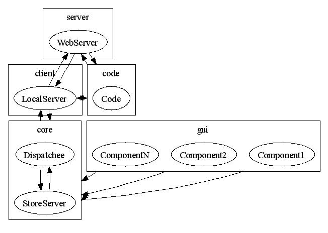

Classes in this package provide an interface to the rest of the Lime Wire for registering {@link LWSManager.Handler}s and {@link LWSManager.Listener}s to an instance of {@link LWSManager} in order to receive events that are sent from Javascript code coming from the Lime Wire Store. The main access to this one instance is through the method {@link com.limegroup.gnutella.LimeWireCore#getLWSManger()}
The overall layout of classes in this package and those in the
lwsserver
component follows:

The following are the definitions of the various sub-components:
gui
portion of the source tree, this could also be parts of the
core
part
Components that wish to listen to commands coming from the web site would call {@link LWSManager#registerHandler(LWSManager.Handler)} or {@link LWSManager#registerListener(LWSManager.Listener)} with an appropriate argument. The different between the two is that there can only be on {@link LWSManager.Handler} and zero or more {@link LWSManager#Listener}s, because the former has to return a result.
The purpose of these classes is to abstract out the authentication
and communication aspect, which is taken care of by the
lwsserver
component.